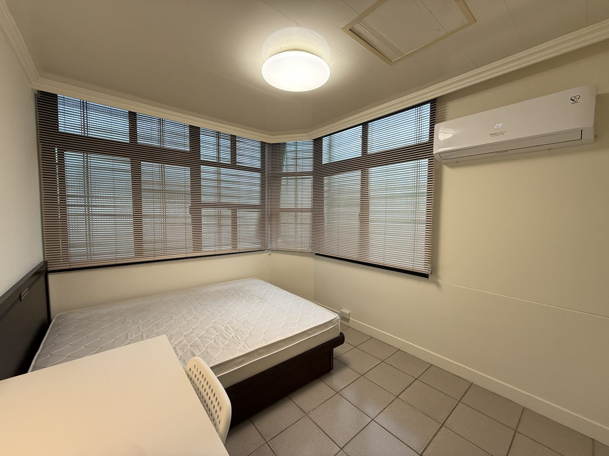
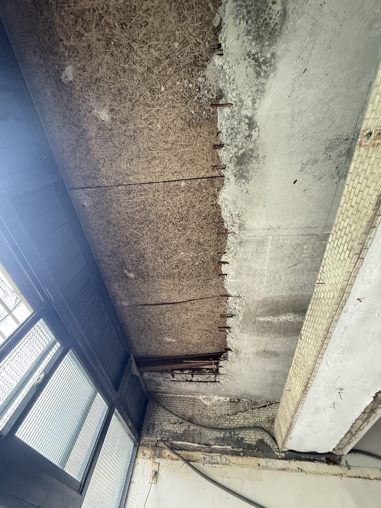

牆壁一直反潮、發霉，油漆剝落、擦掉沒多久又長回來——問題不在油漆，在牆裡的水氣。好厝安居先找源頭、再做防潮與長效防護，不是刷一層蓋過去。
牆面反潮、白色結晶、油漆隆起剝落、角落發霉發黑——這些都是壁癌的典型徵兆，看了心煩，對家人的呼吸道也不好。
牆面摸起來濕濕的、出現白色粉狀結晶，代表水氣正從牆體裡滲出來。
漆面隆起、一片片剝落、批土粉化，蓋了新漆過陣子又被頂起來。
牆角、窗邊長黑黴，擦掉又長回來，長期潮濕影響居住品質與健康。
因為單純刷油漆或補土，只是把表面蓋起來，沒有解決水氣的來源。牆體持續反潮，水氣會再把新的漆面頂起、剝落、發霉——等於錢花了，問題還在。真正要處理的，是「水氣從哪來」。
我們把壁癌當「找病因」在處理，不是刷一層漆交差。
現場判斷水氣來源：外牆滲水、管線漏水、結露、或防水層失效。源頭沒找到，處理都是白費。
打除受損的漆面與批土，針對源頭做防水／防潮處理，把水氣的路徑斷掉或阻絕。
做防潮塗層與面漆收尾，讓牆面乾爽平整、大幅降低復發，住起來也舒服。
※ 誠實說：壁癌能大幅改善、延緩復發；但若源頭是結構性的外牆滲水，會需要搭配防水工程。好厝安居會在現場評估後，把可能的做法與限制先跟您講清楚，不會只靠表面硬蓋。

處理前都是好厝實際做的案場。我們每次施工完都會拍重點照片留紀錄，讓房東就算人不在現場，也看得到牆面處理成什麼樣——這是我們對品質的自我要求，也是對客戶的交代。
關鍵在有沒有處理「反潮的源頭」。很多壁癌會復發，是因為只在表面刷油漆或批土蓋過去，牆體裡的水氣還在，過陣子又從裡面頂出來。好厝安居會先找出源頭（外牆滲水、管線漏水、結露、防水層失效等），針對源頭處理後再做防潮與長效防護，大幅降低復發機率。若源頭是結構性外牆滲水，會誠實告知可能需要搭配防水工程，不會只靠表面硬蓋。
因為單純刷油漆或補土只是把表面蓋起來，沒有解決水氣來源。牆體持續反潮，水氣會再把新的漆面頂起、剝落、發霉，等於錢花了問題還在。正確做法是先斷絕或處理水氣源頭，再做防潮層與面漆。
依牆面範圍、受損程度與源頭狀況而定。好厝安居會先到現場評估，明確告知施工範圍、天數與費用再開工。租屋族或房東不必自己張羅多個廠商，我們一條龍處理到乾淨（詳細天數以現場評估為準）。
費用依牆面面積、受損程度與是否需要防水工程而定，報價分項列清、透明不亂加價、不收丈量費。您可以先用 LINE 傳牆面照片給好厝安居做初步估價，實際金額以現場評估為準。
壁癌常伴隨發霉，長期潮濕發霉的牆面對呼吸道與居住品質確實不好，尤其有長輩、小孩或過敏體質的家庭更要留意。及早處理反潮源頭、保持牆面乾爽，才是根本。
好厝安居主要服務雙北，台北市（大安、信義、中山、松山、文山等）與新北市（板橋、中和、永和、新店、三重等）。實際可服務區域與時程歡迎透過 LINE 確認。
※ 主要服務雙北（台北市／新北市），實際可服務區域與時程請洽好厝安居 LINE 確認。
用 LINE 傳牆面照片，好厝安居先幫您做初步判斷與估價，現場評估後給您分項透明報價——不收丈量費、誠實告知做法與限制。
＋ LINE 拍照免費估價